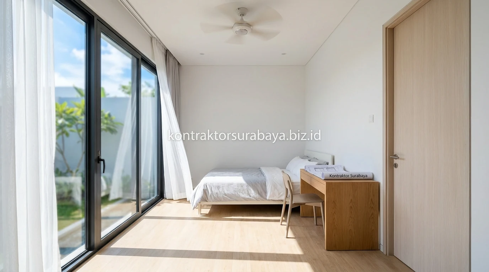

Pertumbuhan kawasan pendidikan tinggi dan industri di Sidoarjo seperti Waru, Sedati, Candi, hingga kawasan dekat kampus perbatasan Surabaya Timur memicu lonjakan permintaan sewa hunian indekos. Namun, mahasiswa zaman sekarang memiliki standar seleksi yang jauh lebih kritis dibanding generasi sebelumnya. Kos-kosan konvensional yang sempit, gelap, dan minim sirkulasi udara mulai ditinggalkan. Sebaliknya, bangunan kos-kosan modern dengan desain arsitektur tropis yang sehat dan fasilitas lengkap menjadi rebutan dengan tingkat okupansi mencapai 100%.
1. Ventilasi Silang sebagai Faktor Utama Kenyamanan Kamar Kos
Jendela pada dua sisi berlawanan dalam satu kamar memungkinkan udara mengalir secara silang (cross ventilation), sehingga kamar kos tidak terasa pengap meski berukuran terbatas.
Kamar kos yang hanya memiliki satu jendela kecil cenderung lebih mudah terasa lembap, pengap, dan berbau kurang sedap dibanding kamar dengan ventilasi silang. Hal ini karena udara tidak memiliki jalur keluar-masuk yang leluasa, terutama pada kamar-kamar yang berada di tengah lantai dasar tanpa akses langsung ke void taman terbuka.
2. Fasilitas yang Membuat Kos-Kosan Lebih Diminati Mahasiswa
Kamar mandi dalam, area komunal untuk bersosialisasi, tempat jemur yang memadai, dan akses internet stabil adalah empat fasilitas yang paling memengaruhi minat mahasiswa terhadap sebuah kos-kosan:
- Kamar Mandi Dalam: Memberikan privasi maksimal, higienis, dan menghemat waktu antrean mandi saat jam kuliah pagi.
- Area Komunal & Dapur Bersama: Tempat mahasiswa berinteraksi, belajar kelompok santai, atau memasak makanan hemat.
- Area Jemur Terbuka Beratap Polikarbonat: Pakaian cepat kering tanpa khawatir basah kuyup saat ditinggal kuliah dan turun hujan mendadak.
- Infrastruktur Wi-Fi & Titik Listrik Banyak: Menunjang aktivitas perkuliahan daring, pengerjaan tugas, dan hiburan streaming.

3. Tata Letak Koridor dan Kamar untuk Sirkulasi Udara Merata
Koridor terbuka tanpa atap penuh dan penempatan kamar yang tidak saling berhadapan langsung membantu sirkulasi udara tetap merata ke seluruh unit kamar kos.
Desain koridor semi-terbuka yang menghadap ke void tengah (inner courtyard), meski tetap terlindung dari tampias hujan, memungkinkan udara luar dan cahaya matahari masuk ke lorong utama bangunan. Hal ini membuat kamar-kamar di sepanjang koridor tetap mendapat pasokan oksigen segar dibanding koridor tertutup seperti lorong hotel kuno yang boros lampu dan AC.
4. Material Bangunan yang Membantu Mengendalikan Kelembapan Ruangan
Cat anti jamur pada dinding, lantai keramik yang tidak menyerap air, dan plafon dengan ventilasi tambahan adalah tiga material yang membantu mengendalikan kelembapan pada bangunan kos-kosan:
- Cat Dinding Anti Jamur & Anti Bakteri: Mencegah bercak hitam pada sudut kamar mandi dalam dan dinding kamar tidur.
- Homogeneous Tile / Granit Matte: Tidak licin, mudah dipel bersih, dan memiliki porositas air sangat rendah.
- Plafon PVC / Gypsum Water-Resistant: Tidak mudah melendut atau keropos jika terkena uap lembap dari kamar mandi.
- Roster Dinding Beton Estetik: Berfungsi ganda sebagai aksen fasad fasilitator angin alami sekaligus pereduksi panas matahari sore.
5. Bagaimana Kepadatan Kamar Memengaruhi Kenyamanan Penghuni?
Jarak antar kamar yang cukup dan jumlah kamar per lantai yang tidak berlebihan membantu menjaga privasi serta mengurangi kebisingan antar penghuni dibanding bangunan kos dengan kamar yang terlalu rapat.
Kos-kosan dengan tata ruang yang terlalu dipaksakan (demi mengejar kuantitas unit) kerap menghadapi masalah peredaman suara dinding yang buruk, parkir motor sempit berebut, serta rasa sesak yang membuat penghuni cepat pindah (churn rate tinggi). Keseimbangan antara rasio kamar produktif dan ruang terbuka hijau justru menghasilkan tarif sewa bulanan yang jauh lebih tinggi dan stabil.
6. Kesalahan Umum dalam Membangun Kos-Kosan yang Membuatnya Sepi Peminat
Ventilasi kamar yang minim, kamar mandi luar tanpa privasi memadai, kurangnya fasilitas komunal, dan tata letak yang membuat kamar lembap adalah empat kesalahan umum yang membuat kos-kosan sepi peminat mahasiswa:
- Kamar Tanpa Jendela Luar (Blind Room): Kamar berada di tengah gedung tanpa sirkulasi udara, membuat ruangan gelap gulita dan pengap.
- Kapasitas Parkir Motor Tidak Sebanding: Mengabaikan rasio 1 kamar 1 motor menyebabkan halaman depan semrawut dan mengganggu tetangga.
- Instalasi Sanitasi dan Septic Tank Asal-Asalan: Menyebabkan bau pipa pembuangan naik ke kamar mandi yang merusak kenyamanan penghuni.
- Minim Sistem Keamanan: Ketiadaan pintu akses digital (smart lock) atau kamera CCTV membuat mahasiswa dan orang tua ragu memilih kos Anda.
"Investasi kos-kosan yang menguntungkan lahir dari desain bangunan yang memprioritaskan kesehatan penghuni; kamar yang sejuk dan terang selalu memiliki antrean penyewa."
Setiap lahan memiliki orientasi dan luas yang berbeda, sehingga jumlah kamar dan tata letak optimal perlu disesuaikan melalui survei dan konsultasi langsung. Lihat dokumentasi proyek kos-kosan komersial lainnya pada galeri proyek kami, atau pelajari cakupan layanan pada halaman jasa kontraktor bangunan Surabaya.